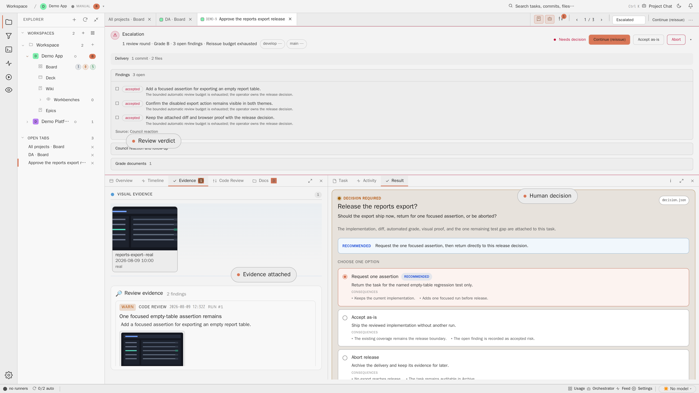
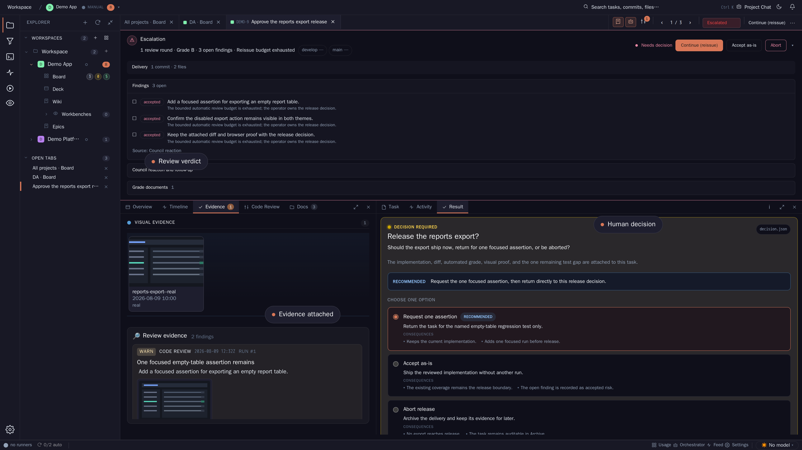

Strong model between steps
One bounded grounds contract, typed decision, mechanical validation, and visible cost for every occurrence. Recommended.
Concept Dossier · AGT-W73 · ORCH-3
A strong model chooses the next typed action from clean, bounded grounds at each transition. Guard rails provide signals. Mechanical boundaries preserve authority, safety, and finite execution.
At every transition from one pipeline step to the next, the reusable StepKind.Orchestrator receives a frozen grounds artefact and chooses one typed action. The same step contract accepts a periodic trigger with scope=project or scope=workspace and no card. The decision is binding within a declared action capability. An adapter invokes the existing service that owns the action; it does not create a second scheduler, Git path, or task mutation path. The eleven existing orchestrator uses become profiles of one input, output, receipt, and dispatcher shape rather than eleven independent deciders.
The model may weigh progress, quality, cost, priority, timing, uncertainty, and alternatives to continue, defer, request a checkpoint, retry, adapt a route, prepare work, or ask a human. It may select an A0 or allowlisted A1 action. A2 is a prepared proposal pending human approval. A3 remains human-only. Fencing and lease authority, exact subject SHA, credible data loss, security and permission boundaries, destructive recovery, protected-branch overrides, and failed-gate waivers are checked mechanically at dispatch. These are authority and truth conditions: a model can reason about them but cannot make a stale lease valid or grant itself a human credential. That limit does not restore an algorithm as the ordinary decider.
If the model is unavailable, over quota, above its invocation cap, or produces invalid schema, a forbidden action, or insufficient evidence, the deterministic degraded mode records ask(reason=decision-unavailable) and pauses this transition for human review. A running process may finish its already authorized safe step; no new costly or mutating transition begins. Idempotent mechanical cleanup and the emergency stop still run. One bounded retry of transport failure may use a configured alternate strong model if the same capability and price ceiling hold; neither retry invents a decision.
DecisionGroundsV1 is the canonical, immutable input. It has occurrenceId, trigger kind and timestamp, scope (card | project | workspace), optional card/attempt/fence/epoch, prior and proposed next step, policy and model-route versions, source freshness, omissions, and a content digest. Every fact carries value, unit, source artefact reference, observed time, coverage, and reliability status. The producer constructs it from typed product artefacts; the model cannot query sessions. The response schema requires chosenAction, target, alternatives considered and rejection reasons, confidence, concise reasoning grounded in cited fact ids, predicted outcome, expected incremental tokens/cost/slot time where applicable, and uncertainty or missing evidence.
| Grounds block | Included granularity | Deliberately excluded |
|---|---|---|
| Truth and progress | Typed run outcome; current attempt epoch/fence; salvage ref and tree SHA; base/result SHA; commit attribution summary; integration state per commit; last verified tree SHA; gate receipt per tree SHA; changed-path counts and bounded diff summary; test evidence status. | Patch body, full test log, session transcript, and speculative success claims. |
| Quality and blockers | Latest review verdict per aspect with blocking reason and evidence ref; decision-journal head; open waits-on/dependency state and exact blocker; unresolved gate id. | Every historical review row or duplicate red summary. |
| Consumption and capacity | Deduplicated per-run and per-card tokens/cost; price status; quota-window head with age; active slot occupancy and host-load band; forecast marginal slot use; current retry counts as signals. | Raw quota samples, full host telemetry stream, a blended dollar total across unknown prices. |
| Decision history | Last three relevant decisions with chosen action, prediction, actual result, reversal and elapsed/cost delta; older history counts by action and outcome with refs. | Full previous model prompts and a claim that the model has learned from its own history. |
| Alternatives | Only currently authorized typed candidates, their reversibility, required approval, expected incremental cost/slot time and evidence prerequisites; also rejected-by-floor candidates with reason, visibly unavailable. | Free-form commands or an action disguised as prose. |
The pack follows the existing bounded, model-oriented context and WatcherEvidencePack pattern: at most 32 KiB UTF-8 and 8,000 estimated input tokens, fixed row caps, truncation markers, and at most two selected redacted log windows of 80 lines or 8 KiB each. Required identities, blockers, signals, candidate actions, and source refs win truncation priority. The invocation truncates lower-priority grounds further to reserve prompt overhead within the 8,000 metered input-token call cap. If required fields cannot fit, the producer emits a typed incomplete pack and the step asks for human review. A drill-down reference identifies the immutable artefact, byte range or row id, digest, and access class; opening it in the UI is a separate authorized read.
For the Fluid capacity sibling, the same envelope uses trigger.kind=periodic-capacity, scope=project or workspace, card=null, a time window and capacity snapshot id. It carries aggregate reservations, utilization, host health, quota coverage, eligible queue counts, and distinct blocker fingerprints. Its action target is project, host, queue, or operator, never an invented card. The sibling owns resource allocation, utilization views, and periodic cadence; this Dossier owns the grounds, configurable deciding model, per-occurrence record with content/tokens/cost, and action vocabulary that it consumes.
Signals include liveness (silence and no-CPU-progress window), loop budget use, repeated tool fingerprint, elapsed time, salvage and verified progress, review severity, dependency wait, quota headroom, slot occupancy, host-load band, and incremental work forecast. Measured gate p95 × 1.5 and review aspect base × model weight plus material size retain their derivation sentence, cohort, sample count, timestamp, and override source. A signal is a question for the model to weigh, never a command to stop, reissue, or escalate.
Consumption is shown in two views: absolute exposure and route-matched relative exposure. Use the actual billed categories: uncached input, cached input, cache write, and output. Codex total input can already include cached tokens, so subtract the cached subset before applying uncached rates; otherwise a cache spike can overstate GPT cost by about ninefold. Deduplicate ledger rows by immutable provider call or run usage id before card aggregation; the known 22 duplicate rows totaling 3,964 USD cannot become 22 units of pressure. Show raw rows, excluded duplicate count and value, corrected subtotal, and data-quality flag for audit. An unknown price remains unpriced with tokens and affected-run count, not zero. The local pinned catalogue still lacks gpt-6-sol pricing for 319 runs in the cited 30-day window; a public rate alone does not silently repair historical ledger facts.
Compare cumulative spend with a median cohort at the same task class, phase, model route, thinking level, and verification profile; also display absolute priced USD. Compare slot minutes and attempts in their own units. For example, $400 and $2 at equal route-relative progress receive different scrutiny because a failed continuation at $400 has greater absolute exposure. The model must explain the marginal case for another round. No scalar pressure score or threshold makes that decision. Missing or unreliable cost raises uncertainty; it cannot be used as a cheap-run claim or as a reason to waive quality.
Decision history is evaluative evidence, not silent self-tuning. Store what the model predicted (completion chance or qualitative likelihood, incremental spend and time, expected next receipt) and what later occurred, tied to the same attempt and SHA. Offline cohort reviews can measure calibration, reversals, wasted continuations, and missed recoveries. A policy change requires a versioned edit and replay; the model cannot change its own authority or prompt during a live decision.
The closed union is observe | prepare | defer | continue | adapt | checkpoint | retry | halt | ask, each with a typed target and reason. Continue advances a validated transition; defer sets a review time; halt names a run/card/project target and terminal status; adapt names a permitted route or prepared scope change. A scope change, semantic conflict, and protected branch write remain proposals for a human. The model chooses from candidates generated for this occurrence; dispatch validates the choice against current authority and state.
| Existing vocabulary | Canonical mapping |
|---|---|
| Model escalation: accept / upgrade / human-review | continue / retry(route-upgrade) / ask |
| Supervision: force-fail / cancel-run / pause-pickup / resume / park / queue-fix / wait / escalate-deep | halt(run,force-fail) / halt(run,cancel) / defer(project,pause) / continue(project,resume) / halt(card,park) / prepare(follow-up) / defer / prepare(deep-analysis) |
| Telemetry: observe / prepare / intervene / ask | observe / prepare / one explicit adapt | retry | halt variant / ask |
| ADR-0051: pass / reopen-with-feedback / escalate | continue(pipeline-pass) / retry(reopen) / ask |
Replace the default 3,600-second coding run timeout with a project setting inherited from workspace default and platform constant, initially 24 hours. Resolve it with the existing project settings precedence and show its effective source on the run. It is an emergency stop for a hung process, lost worker, or unbounded loop. At expiry, stop the process with a typed reason, preserve the existing salvage ref and SHA, emit a signal and grounds artefact, and request a model decision about continuation or human review. The limit never sizes a card or instructs the model to finish early. A separate liveness observation, as in RemoteReviewWorkspace, can warn on silence and no CPU progress within this ceiling.
Finite execution is mechanical. A loop budget can prevent the same action from re-entering while the model receives a loop-exhausted signal and alternative actions. If the model cannot decide, the transition rests in human review with the receipt. The counter does not itself choose escalation. A truly hard authority floor, such as stale fencing, may block dispatch immediately, because executing it would be invalid regardless of the model's preference.
ORCH-3 adds a workspace Rules page and a project Rules overlay beside the existing orchestrator settings. Each rule row shows stable id, scope, soft | hard floor, version, signal source, effective value/source, last firing, and owner. Its editor exposes trigger, freshness, derivation and sample window, warning threshold or invariant, candidate actions, autonomy class, model route, missing-data behavior, and a plain-language example. Soft rules feed grounds and may differ by project; hard floors describe authority and safety and cannot be weakened by a project. A project overlay shows inherited and proposed values side by side.
Like the pipeline editor, definitions are versioned under application-owned .metadata/ through the API, with actor, reason, parent version, diff, activation time, and rollback as a new version. An assistant may draft a proposal but never auto-apply it. A dry run replays up to 100 recent occurrences or 30 days with frozen grounds, showing old/new signals and candidate sets, observed outcomes, missing evidence, projected token/cost change, and floor conflicts. Replayed model choices are labeled counterfactual; history cannot prove what a new prompt would have caused. The editor refuses schema-invalid changes, hidden raw-session access, unbounded invocation budgets, disabling a breaker, weakening fencing or A3 authority, removing an emergency ceiling, or setting a model below the trusted correctness floor. Activation pins a version per occurrence, with audit of who changed it.
Every occurrence writes OrchestratorDecisionReceiptV1: occurrence, trigger, scope and optional card/attempt, preceding and next step, grounds digest and immutable link, every signal read with value/freshness, offered and floor-rejected alternatives, chosen action and target, confidence, cited reasoning, prediction, policy/prompt/model route versions, deciding provider/model/thinking level, input/cached input/cache-write/output tokens, price basis/status and estimated cost, start/end time, dispatch outcome, and later outcome link. Retain the bounded content of both grounds and model response under the receipt, with redaction and authorized drill-down. A model identifier belongs in the decision payload itself, closing today's missing decidedByModel gap.
The task transition view places the decision between step rows with a one-click path to grounds, response, and source evidence. Its primary statement names the chosen action and actual blocker above the pipeline; header, Result pane, bus, and timeline derive from the same receipt and gate id. This removes competing red summaries. Roll-ups show count, deciding models, tokens, priced subtotal, unknown-price coverage, and per-occurrence spend per card, project, and time window, answering “what did deciding cost us?” A periodic capacity occurrence appears in a project timeline and roll-up even when no card exists.
The cited 30-day ledger shows core-agent-run at $20,781.56 and three aspects at $1.31, $0.68, and $0.45, totaling $2.44, while no orchestrator step is separately priced. This is a measurement gap, not evidence that decision calls cost zero. At the public 6 October 2026 GPT-6 Astra standard short-context API rates of $10 per million uncached input and $50 per million output, an 8,000-input plus 1,000-output maximum is $0.13 per decision before cache discounts. Eleven such occurrences are at most $1.43 per card at that envelope. This is an API-equivalent planning estimate, not a measured CLI invoice. A default cap of 24 calls per card, 8,000 metered input and 1,000 output tokens per call, and $5 in priced decision spend per card bounds the same case near $3.12; project periodic checks get a separate default of 48 calls, 384,000 input tokens, 48,000 output tokens, and $10 priced spend per day, each configurable. Cap exhaustion emits a receipt and takes the deterministic ask degraded mode. Unknown-price calls consume call and token caps and remain visibly unpriced. Measure actual occurrences before optimizing the deciding model.


684688c92, ADR-0056 pinned workspace, presentation-capture.spec.ts, browser clock fixed to 9 August; copied from 08-landing-task-detail--light--pinned.png.Dark: published in the same pinned capture run, browser clock fixed to 9 August; copied from 08-landing-task-detail--dark--pinned.png.The orchestrator reads the artefact, never a CLI session. A selected redacted log window is itself an immutable bounded artefact with range, digest, detector, and reason for selection; it is different from granting the model a path to cli-output.log or streaming arbitrary raw lines. The producer can inspect raw data to create a bounded signal, but the model prompt receives only the pack. An authorized operator can follow a drill-down reference to the full source without adding it to model context.
Migrate the supervision-loop direct cli-output.log reader to a window-producing adapter. Migrate the orchestrator-context multichat session projection to bounded event clusters and receipt heads. Adapt abort-review input assembly and all eleven orchestrator profiles to the shared pack and output schema. Keep the telemetry-layer rule that the orchestrator consumes clusters and receipts, not unbounded streams. A pack overflow or missing critical source becomes an explicit omission and degraded decision.
The existing 13-entry loop inventory remains the only register. Each entry retains its stable id, kind, location, re-entry trigger, named budget, breaker test, last-fired evidence, and reset semantics. Replace “Action when budget exhausted” conceptually with “Signal raised: loop.<id>.exhausted; measured count/window/attempt; candidate actions; re-entry blocked pending a decision.” CI still requires inventory, constant, and breaker test together. Breakers must prove a loop cannot spin forever even if the model is unavailable; they test finite admission and terminal handoff, not an automatic counter-selected escalation. Migration must update the register and tests in implementation cards, not in this concept delivery.
| Existing policy | New role | Mechanical remainder |
|---|---|---|
| Gate run budget, p95 × 1.5, min 20 samples, project override | Measured duration warning with full derivation in grounds | Per-command kill ceiling for runaway gate process |
| Review aspect budget, CLI/model/material derivation | Expected duration and anomaly signal with derivation sentence | Bound a single aspect command and preserve exact-SHA result validity |
| Watcher contingent token/call ledger | Remaining contingent and exhaustion signal | Finite model invocation admission and durable accounting |
| Coding run timeout, default 3,600 seconds | Silence/progress warning; elapsed exposure in grounds | Replace with configurable 24-hour emergency stop and salvage |
| Salvage continuation, 1 automatic round per attempt epoch | Round count, progress, and exhaustion signal | Prevent unbounded re-entry and stale salvage dispatch |
| Review reissue, 2 per attempt epoch | Reissue history and exhaustion signal | Finite re-entry and exact review-subject guard |
| Git call budget | High call-rate warning and consumed count | Bound subprocess fan-out and host resource use |
| Gate environment retry ceiling | Environment failure fingerprint and exhaustion signal | Prevent infinite retries and preserve gate authority |
AGT-W68 remains the run-budget Dossier. RB-S1's deduplicated per-card ledger and progress definition survive as grounds; RB-S3's verified-tree checkpoint contract survives as a model-selectable action; RB-S4's salvage handoff survives but its automatic progress-gated round becomes a decision candidate; RB-S5's operator raise/cut/stop controls survive as an ask destination. RB-S2's stepped 90/120/150/180/240-minute shaping budgets and RB-S1/RB-S5's third-exhaustion automatic gate are superseded. A signal, strong decision, and wide emergency stop replace them. This Dossier does not redesign AGT-W68, AGT-W69 merge economics, AGT-W56 complexity routing, or AGT-W70 integration throughput.
From the salvaged AGT-W73, keep the signal set, honest consumption normalization, action union, bounded artefact proposal, and receipt fields because they produce useful decision grounds. Invert the pure rule core's final authority, algorithmic pressure thresholds, pre-claim admission formula, measured coding budget as a shaping instrument, and counter-selected escalation because they contradict the operator's 4 October corrections. Reuse hard checks only as validity and emergency boundaries.
One-sentence rule: “For each orchestrator transition or periodic intervention, a strong model chooses a typed action from bounded, versioned decision grounds; deterministic code validates authority and safety, enforces finite execution, dispatches the admitted action, and records a complete receipt.”
Amend ADR-0032 rather than silently replacing it: retain typed input/output contracts, loop inventory, breaker tests, and no arbitrary shell execution. Supersede its “agent classifies; code decides,” pre-guard budget refusal as ordinary work policy, and post-guard counter-selected action. The new boundary applies to PostAbortReviewDecider.Decide and the agent contract pattern: proposedAction becomes a binding choice only after schema and current-authority validation. On invalid model output or unavailable model, record ask with the reason and hold the transition. ADR-0051's artefact-reading principle remains.
One bounded grounds contract, typed decision, mechanical validation, and visible cost for every occurrence. Recommended.
Replays the salvaged AGT-W73 approach and makes measured thresholds choose the action. Rejected because it leaves the clever decision in code.
Reads sessions and issues free-form recovery commands. Rejected because it cannot preserve artefact, authority, or cost boundaries.
Amend ADR-0032, establish DecisionGroundsV1 and OrchestratorDecisionReceiptV1, and run a configurable strong model at every transition and periodic intervention. Keep the 24-hour emergency stop, authority floors, invocation caps, and loop breakers mechanical. Start with receipt-only shadow capture, then activate one transition profile at a time.
| Decision point | Working recommendation | Rejected option |
|---|---|---|
| Authority | Strong model chooses; mechanical code checks floors and capability. | Pure decider selects ordinary action. |
| Degraded mode | One bounded alternate-model transport retry, then ask and hold. | Silent deterministic continuation or repeated model calls. |
| Emergency run limit | Configurable 24-hour default with existing salvage. | 3,600-second shaping timeout or stepped run budgets. |
| Cost protection | 24 calls/card, 8,000 input and 1,000 output tokens/call, $5 priced cap; separate daily periodic cap of 48 calls and $10 priced spend per project. | Unlimited strong calls or a dollar-only stop policy for coding work. |
| Rules scope | Workspace version with bounded project overlay, dry run, explicit activation. | Scattered constants or assistant auto-apply. |
| Artefact access | Bounded pack plus immutable authorized drill-down. | Session transcript or raw log stream in model context. |
| Fluid capacity seam | Shared occurrence receipt with nullable card and periodic project/workspace scope. | Card-only transition schema or separate capacity decision vocabulary. |
These are proposed implementation cards in workbench.json. No production behavior or operator approval is claimed.